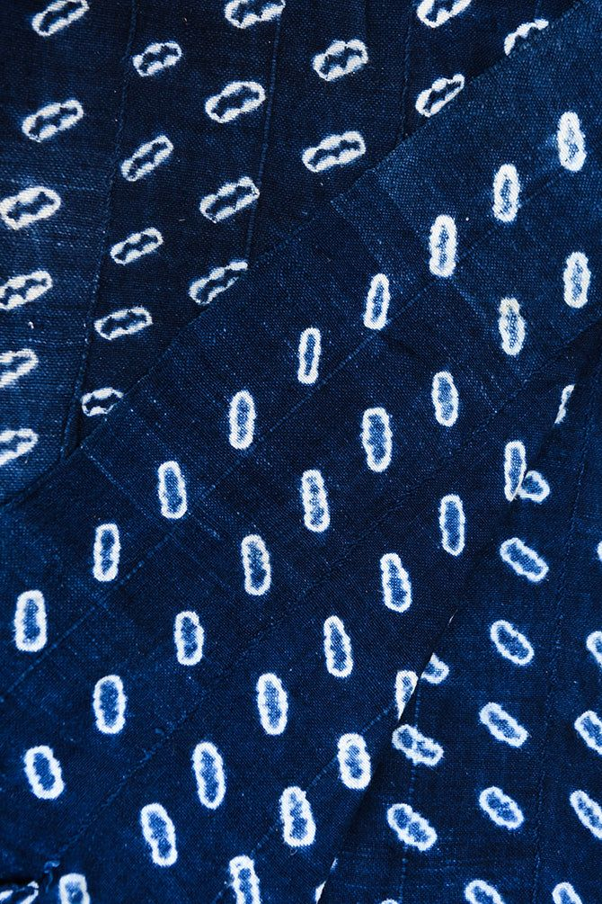

Non-Linear Study
Artifacts can be grouped into collections—preserving the evolution of a single idea across different creators.
Artifacts can be grouped into collections—preserving the evolution of a single idea across different creators.
Explore Collection
Click to enter the "Deconstructed Uniforms" study and view the connection between these artifacts.
Click to enter the "Deconstructed Uniforms" study and view the connection between these artifacts.
